二、V型发动机：汽缸排列在成一定角度的两个平面上，V6发动机
三、水平对置式发动机：汽缸排列在发动机相对的两个平面上
四、汽车变档机制
五、汽车万向节
六、飞机的星形发动机
七、双涵道涡轮风扇发动机+喷气发动机
八、转子发动机--内燃机的一种，把热能转为旋转运动而非活塞运动。
九、奎西发动机
十、斯特林发动机
十一、二冲程发动机
十二、四冲程发动机
十三、工业式蒸气机
十四、火车式节气机
十五、缝纫机
十六、舰炮弹药装填系统，推进药跟战斗部是分开的
十七、手枪---不卡壳是水平
十八、飞机机枪
十九、马耳他十字机芯——用于控制时钟的秒针运动
二十、三相定子绕组
二一、椭圆规
二二、其它机械原理图

二、V型发动机：汽缸排列在成一定角度的两个平面上，V6发动机↓

三、水平对置式发动机：汽缸排列在发动机相对的两个平面上↓
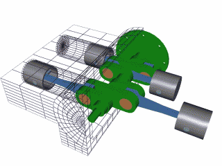
四、汽车变档机制↓
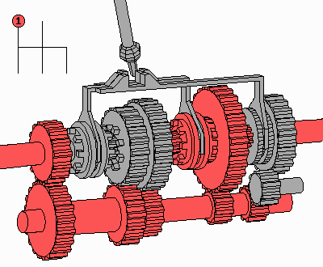
五、汽车万向节↓
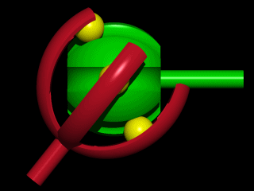

六、飞机的星形发动机↓
 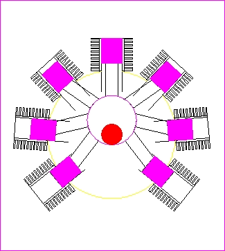
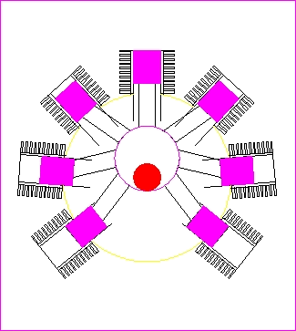 七、双涵道涡轮风扇发动机↓

涡轮喷气发动机↓
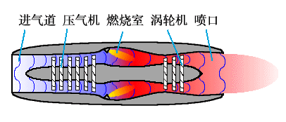
八、转子发动机--内燃机的一种，把热能转为旋转运动而非活塞运动。↓
转子发动机（Wankel Engine、Rotary Engine）是由德国人菲加士·汪克尔（Felix Wankel，1902-1988）所发明。转子发动机采用三角转子旋转运动来控制压缩和排放，与传统的活塞往复式发动机的直线运动迥然不同。对于转子发动机，膨胀压力作用在转子的侧面，从而将三角形转子的三个面之一推向偏心轴的中心。这一运动在两个分力的力作用下进行，一个指向输出轴中心的向心力，另一个是使输出轴转动的切线力。
我们都知道，一般车辆使用的是4行程活塞发动机，要上下各两次才能完成一次循环，所以被称为4行程发动机。而转子发动机并没有活塞，只有一颗三角弧形的转子。当然也没有气缸壁，只有一个蚕茧形的气室，而转子就是在这蚕茧形的气室内转动。转子在气室内不是规矩的绕着轴心转动，如果转子真的是绕着固定轴心转动，那气室的形状将会是圆形，进气，压缩，爆炸，排气的内燃机四个行程将不存在，所以转子的驱动轴是偏心的，也就因为驱动轴是偏心的，所以转子才能在蚕茧形气室内上下旋转，因此气室才会设计成蚕茧形。
气室被三角弧形转子分成了三份，旋转时大小会不断变化，这些变化量就是转子发动机的排气量。这时只要在气室的侧壁上下开孔，下孔就会因转子压缩气室内的空间而变成排气孔，而没有开口的腰部，空气就会被压缩，只要有火花塞点火就可以引爆混合汽油空气产生膨胀，推动转子旋转，而混合燃油的空气则由上空吸入，这样转子发动机就完成了进气，压缩，爆炸，和排气四个行程。
因为转子是三角弧形的，所以有三个独立运作的空间，于是转子转一圈就会有三次的动力行程；转子中间还有一个很重要的设计，那就是转子齿与驱动齿的齿比绝对是3：2，所以转子转一圈驱动轴转三圈，这就是转子发动机驱动轴可以轻易达到10000r/min的高转速的原因；而4行程活塞发动机若要达到每一转就有一次动力则需要两气缸，也就是说相同的转速下，一个转子相当于两气缸；from
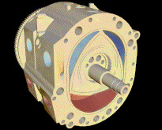
九、奎西发动机↓

十、斯特林发动机↓
斯特林发动机这种发动机是伦敦的牧师罗巴特 斯特林（Robert Stirling）于1816年发明的，所以命名为“斯特林发动机”（Stirling engine）。斯特林发动机是独特的热机，因为他们理论上的效率几乎等于理论最大效率，称为卡诺循环效率。斯特林发动机是通过气体受热膨胀、遇冷压缩而产生动力的。这是一种外燃发动机，使燃料连续地燃烧，蒸发的膨胀氢气（或氦）作为动力气体使活塞运动，膨胀气体在冷气室冷却，反复地进行这样的循环过程.
斯特林发动机的最大的特点是作工用的气体呈封闭循环状态，不需要外界提供空气。利用的是气体热胀冷缩原理，属于“外燃机”。潜艇使用这种发动机后可以延长在水下的潜航时间，而普通的潜艇在上浮时使用柴油机，同时为电池充电。在水下时，因为没有空气，所以只能用电动机工作。这种潜艇是要依赖空气进行推进的。 使用斯特林发动机的潜艇，是不依赖于外界空气的。这种潜艇，也被称作亚核潜艇。日本的苍龙级潜艇，就是这种所谓的AIP潜艇。AIP就是英文Air-Independent Propulsion（不依赖空气推进）的缩写。
 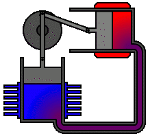
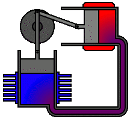


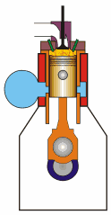
 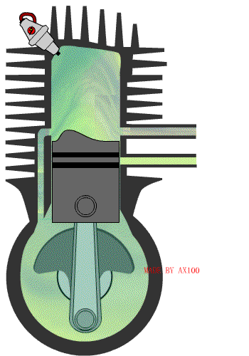
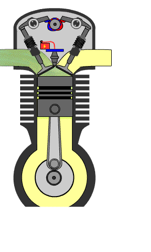
十二、四冲程发动机↓
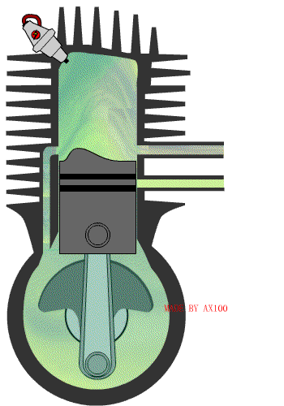
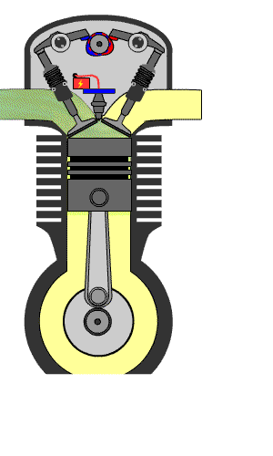
十二、四冲程发动机↓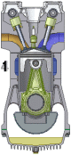
 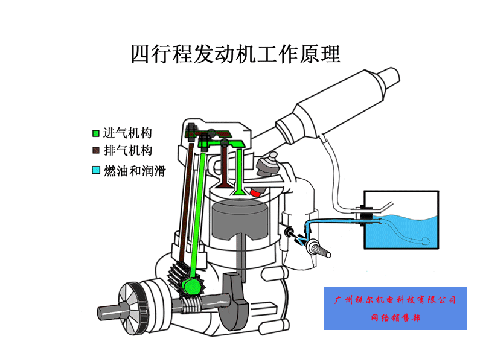
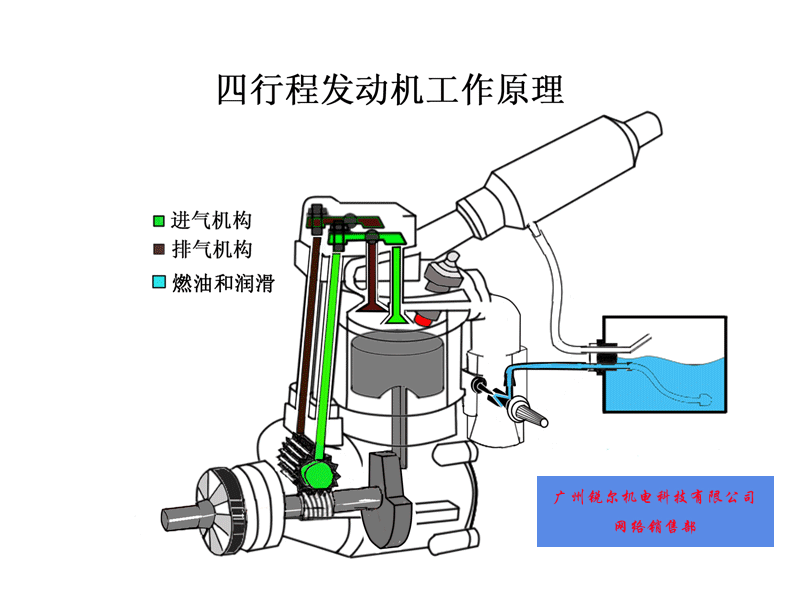
十三、工业式蒸气机↓
 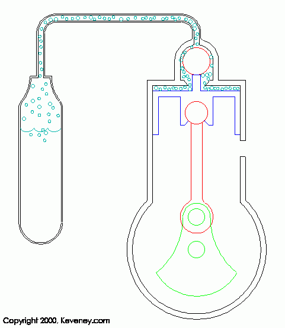
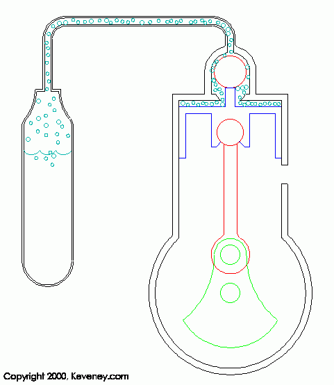 十四、火车式蒸气机↓
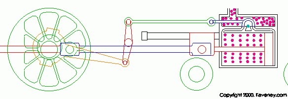
十五、缝纫机↓
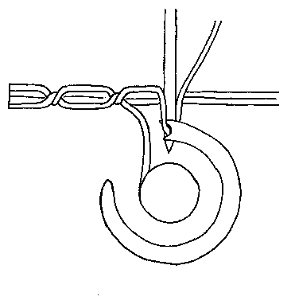

十六、舰炮弹药装填系统，推进药跟战斗部是分开的↓
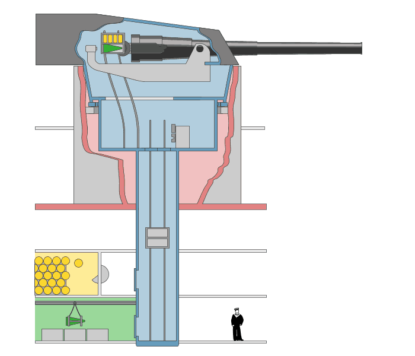
十七、手枪---不卡壳是水平↓
 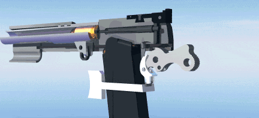
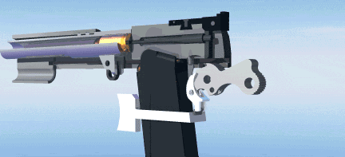 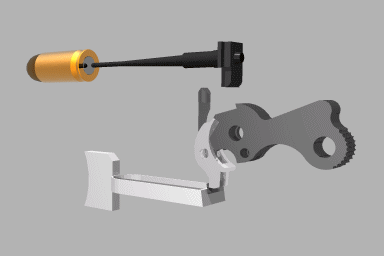
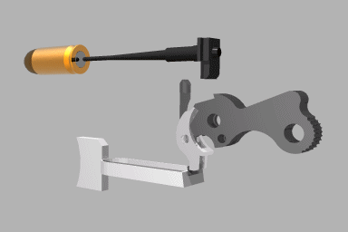
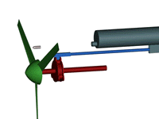
十九、马耳他十字机芯——用于控制时钟的秒针运动↓

二十、三相定子绕组励磁、绕组、旋转磁场↓
 二一、椭圆规↓
二一、椭圆规↓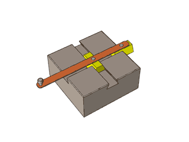
二二、其它机械原理图↓
 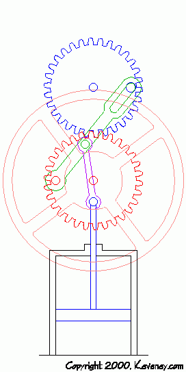
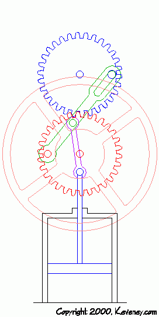外燃机是一种外燃的闭式循环往复活塞式热力发动机，有别于依靠燃料在发动机内部燃烧获得动力的内燃机。新型外燃机使用氢气作为工质，在四个封闭的气缸内充有一定容积的工质。气缸一端为热腔，另一端为冷腔。工质在低温冷腔中压缩，然后流到高温热腔中迅速加热，膨胀做功。燃料在气缸外的燃烧室内连续燃烧，通过加热器传给工质，工质不直接参与燃烧，也不更换。编辑本段外燃机优缺点
由于外燃机避免了传统内燃机的震爆做功问题，从而实现了高效率、低噪音、低污染和低运行成本。外燃机可以燃烧各种可燃气体，如：天然气、沼气、石油气、氢气、煤气等，也可燃烧柴油、液化石油气等液体燃料，还可以燃烧木材，以及利用太阳能等。只要热腔达到700℃，设备即可做功运行，环境温度越低，发电效率越高。外燃机最大的优点是出力和效率不受海拔高度影响，非常适合于高海拔地区使用。
热气机(StirlingEngine)是一种由外部供热使气体在不同温度下作周期性压缩和膨胀的闭式循环往复式发动机，由苏格兰牧师 RobertStirling在十九世纪初发明，所以又称斯特林发动机。相对于内燃机燃料在气缸内燃烧的特点热气机又被称作外燃机。现在热气机特指按闭式回热循环工作的热机，不包括斯特林热泵或斯特林制冷机。
热气机工作原理
热气机是一种外燃的、闭式循环往复活塞式热力发动机。
热气机可用氢、氮、氦或空气等作为工质，按斯特林循环工作。在热气机封闭的气缸内充有一定容积的工质。气缸一端为热腔，另一端为冷腔。工质在低温冷腔中压缩，然后流到高温热腔中迅速加热，膨胀作功燃料在气缸外的燃烧室内连续燃烧，通过加热器传给工质，工质不直接参与燃烧，也不更换。
已设计制造的热气机有多种结构，可利用各种能源，已在航天、陆上、水上和水下等各个领域进行应用。试验热气机的功率传递机构分为曲柄连杆传动、菱形传动、斜盘或摆盘传动、液压传动和自由活塞传动等。
按缸内循环的组成形式分，热气机主要有配气活塞式和双作用式两类。在一个气缸内有两个活塞作规律的相对运动，冷腔与热腔之间用冷却器、回热器和加热器连接，配气活塞推动工质在冷热腔之间往返流动。
热力循环可以分为定温压缩过程、定容回热过程、定温膨胀过程、定容储热过程四个过程。
与内燃机比较热气机所具备的优点：
适用于各种能源，无论是液态的、气态的或固态的燃料，当采用载热系统(如热管)间接加热时，几乎可以使用任何高温热源(太阳能放射性同位素和核反应等)，而发动机本身(除加热器外)不需要作任何更改。同时热气机无需压缩机增压，使用一般风机即可满足要求，并允许燃料具有较高的杂质含量。
热气机在运行时，由于燃料在气缸外的燃烧室内连续燃烧，独立于燃气的工质通过加热器吸热，并按斯特林循环对外做功，因此避免了类似内燃机的爆震做功和间歇燃烧过程，从而实现了高效、低噪和低排放运行。高效：总能效率达到80%以上；低噪：1米处裸机噪音底于68dBA；低排放：尾气排放达到欧5标准。
喷气发动机的工作原理大致是这样的：空气由前方进入发动机——压缩风扇对空气进行压缩（一般进行多级压缩）——空气进入燃烧室——燃烧室里由喷口喷出燃油，与空气混合、燃烧——燃气向后喷出，部分能量推动涡轮做工——其他燃气喷出，推动飞机运动。涡轮是与压缩风扇相连，由涡轮带动压缩风扇运动。这是一个循环过程。
螺旋桨飞机就是通过活塞发动机带动螺旋桨产生的拉力或推力，简单的说就是通过活塞发动机燃烧室燃烧使得气体剧烈膨胀推动活塞带动连杆从而运转曲轴旋转，然后带动螺旋桨，螺旋桨你可以想象成一个电风扇，通过对后方闪动气体从而产生向前的反作用力；
涡轮喷气式发动机就复杂点了，大概就是通过涡轮增压的混合气体经过剧烈燃烧氧化产生的巨大的向前推动的反作用力，备注：喷气式的一般用的是航空煤油，螺旋桨式的一般用的航空汽油，不是一般的汽油跟煤油哦！
飞机是比空气重的飞行器，因此需要消耗自身动力来获得升力。而升力的来源是飞行中空气对机翼的作用。
在下面这幅图里，有一个机翼的剖面示意图。机翼的上表面是弯曲的，下表面是平坦的，因此在机翼与空气相对运动时，流过上表面的空气在同一时间(T)内走过的路程(S1)比流过下表面的空气的路程(S2)远，所以在上表面的空气的相对速度比下表面的空气快(V1=S1/T >V2=S2/T1)。根据帕奴利定理——“流体对周围的物质产生的压力与流体的相对速度成反比。”，因此上表面的空气施加给机翼的压力 F1 小于下表面的 F2 。F1、F2 的合力必然向上，这就产生了升力。
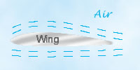从机翼的原理，我们也就可以理解螺旋桨的工作原理。螺旋桨就好像一个竖放的机翼，凸起面向前，平滑面向后。旋转时压力的合力向前，推动螺旋桨向前，从而带动飞机向前。当然螺旋桨并不是简单的凸起平滑，而有着复杂的曲面结构。老式螺旋桨是固定的外形，而后期设计则采用了可以改变的相对角度等设计，改善螺旋桨性能。
1 活塞式航空发动机一般以汽油为燃料，带动螺旋桨，由螺旋桨产生推（拉）力为飞机提供动力。所以，作为飞机的动力装置时，发动机与螺旋桨是不能分割的。
活塞式航空发动机的主要构件:气缸、活塞、连杆、曲轴、进、排气活门、机匣。
活塞式发动机的优点：
经济性较好：不但耗油率低，而且单位功率的售价低；
燃烧较完全，所以对环境的污染相对较小；
噪音较小。
目前，活塞式航空发动机仍广泛地应用于小型低速飞机。
2 脉动式喷气发动机
现代高速飞机多数使用喷气式发动机，原理是将空气吸入，与燃油混合，点火，爆炸膨胀后的空气向后喷出，其反作用力则推动飞机向前。下图的发动机剖面图里，一个个压气风扇从进气口中吸入空气，并且一级一级的压缩空气，使空气更好的参与燃烧。风扇后面橙红色的空腔是燃烧室，空气和油料的混和气体在这里被点燃，燃烧膨胀向后喷出，推动最后两个风扇旋转，最后排出发动机外。而最后两个风扇和前面的压气风扇安装在同一条中轴上，因此会带动压气风扇继续吸入空气，从而完成了一个工作循环。
该发动机由进气道、活门装置、燃烧室和长喷管组成。燃料有效燃烧所必须的压力，是依靠发动机中半闭塞的容积内燃烧时产生的。
工作时，先把空气压入活门装置内与燃料混合燃烧，燃烧后燃气的压力将活门关闭，以防止燃气倒流，燃气以很高的速度从长喷管喷出，产生推力。燃气喷出后，由于燃气的惯性，仍继续往外喷，在燃烧室内造成气体稀薄的现象，压力小于外界的大气压。由于压差的作用，自动打开活门装置，空气再次进入燃烧室循环工作。
脉动式喷气发动机的特点
脉动式喷气发动机结构简单、体积小，可以地面起动。在700km/H的飞行速度下，比推力为冲压发动机的2~3倍。但燃烧不连续，推力忽大忽小，振动厉害，不宜载人，寿命较低。此外脉动式喷气发动机的燃油消耗量大，限制了它的推广应用。
3 冲压式喷气发动机
该发动机由进气道、燃烧室和喷管组成。空气先经进气道扩压后，速度下降、压力提高，压缩后的空气与燃油喷嘴喷出的燃油混合在燃烧室进行等压燃烧，高温高压燃气从喷管高速喷出，产生推力。
冲压式喷气发动机的特点
由于空气是依靠外界飞行速度的冲压而增压的，所以推力随飞行速度的提高而增加。冲压发动机在飞行速度很大的情况下才能有效地产生推力。发动机在地面放置时速度等于零，不能产生推力，所以冲压发动机在地面不能单独起动，必须与其它类型发动机组合一起才能使用。
4 涡轮喷气发动机 这类发动机的原理基本与上面提到的喷气原理相同，具有加速快、设计简便等优点。但如果要让涡喷发动机提高推力，则必须增加燃气在涡轮前的温度和增压比，这将会使排气速度增加而损失更多动能，于是产生了提高推力和降低油耗的矛盾。因此涡喷发动机油耗大，对于商业民航机来说是个致命弱点。
5 涡轮风扇发动机 涡轮风扇发动机吸入的空气一部分从外部管道(外涵道)后吹，一部分送入内涵道核心机(相当于一个纯涡喷发动机)。最前端的“风扇”作用类似螺旋桨，通过降低排气速度达到提高喷气发动机推进效率的目的。同时通过精确设计，使更多的燃气能量经风扇传递到外涵道，同样解决了排气速度过快的问题，从而降低了发动机的油耗。由于该风扇设计要兼顾内外涵道的需要，因此难度远大于涡喷发动机。
6 冲压喷气发动机 此类发动机没有风扇等器件，完全靠高速飞行时产生的冲压效应压缩吸入的空气，点火、燃烧、后喷等原理。因此其优点为结构简单、体积小、推力大、加速快。缺点是需要外部能源进行启动(通常为火箭助推)，不适合循环使用。
自从人们跳出模仿飞鸟拍翅飞行的谜思之后，依据贝努力原理的空气动力升力就成为除气球和火箭外所有动力飞行器的基本原理。机翼前行时，上下翼面之间的气流速度差造成上下翼面之间的压力差，这就是升力。所谓“机翼前行”，实际上就是机翼和空气形成相对速度。既然如此，和机身一起前行时，机翼可以造成升力，机身不动而机翼像风车叶一样打转转，和空气形成相对速度，也可以形成升力，这样旋转的“机翼”就成为旋翼，旋翼产生升力就是直升机可以垂直起落的基本原理。